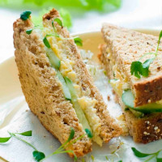

Antes de praticar atividades físicas é importante ingerir alimentos que garantam a energia necessária para o corpo queimar gordura e gerar músculos durante os exercícios, mas que não sejam pesados demais. O ideal é apostar em carboidratos de rápida absorção e baixo nível glicêmico, como frutas ou sucos sem açúcar e pães integrais. Por terem baixo índice glicêmico, o açúcar presente nesses alimentos demora a chegar na corrente sanguínea, o que faz com que o corpo opte pela gordura como fonte de energia. Além disso, a rápida absorção desses carboidratos favorece a formação de massa muscular. Para dias mais quentes, a água de coco também é uma boa opção, já que evita a desidratação e funciona como um isotônico, repondo os sais minerais

Sugestão de lanche:
Sanduíche com 2 fatias de pão integral + 1 ovo mexido ou frango desfiado
vitamina com 1 banana + meio mamão papaya + 200 ml de leite desnatado + 1 colher de aveia
10 alimentos ricos em potássio para ingerir antes:
Beterraba, Arroz integral, Alface, Feijão, Lentilha, Peixes, Ovo, Banana, Abacate,Ameixa seca, Figo, Abacaxi, Tâmara, Amêndoas, Noz e Pepino
Suco verde
Ingredientes
- 1 folha grande de couve manteiga
- Raminhos de hortelã
- 1 kiwi
- ½ limão espremido
- 1/2 maçã verde picada com casca
- 2 colheres de sobremesa de quinoa em flocos
- 1 rodela fina de gengibre
- 1 dose de suplemento proteico sabor baunilha
- Gelo
Modo de Preparo: Bata todos os ingredientes no liquidificador.
Shake termogênico
Ingredientes
- 1 xícara de café
- 1 colher de sopa de óleo de coco
- 1 colher de sopa de manteiga ghee
- 1 colher de café de canela em pó
- 2 colheres de sopa de whey protein sabor chocolate
Modo de Preparo: Bata todos os ingredientes no liquidificador e servir.
Milk Shake de Abacate
Ingredientes
- 1 copo de leite de coco caseiro
- 1 scoop de whey protein sabor chocolate
- 5 colheres de sopa de abacate
- Gelo
Modo de Preparo:Bata todos os ingredientes no liquidificador.
Panqueca
Ingredientes
- 1 bolacha de arroz integral quebrada
- 1 colher de chá de adoçante natural
- 1 colher de sopa de cacau sem açúcar
- 1 colher de sopa de manteiga de amendoim
- 1/3 xícara de chá de clara de ovo
- 2 scoops de whey protein
- calda de chocolate sem açúcar
Modo de Preparo: Coloque todos os ingredientes em uma tigela até a mistura ficar homogênea. Despeje a massa em uma frigideira em temperatura baixa, mexendo suavemente para que a massa fique fininha.Vire a panqueca depois que ela dourar. Doure do outro lado. Recheie com pasta de amendoim e a calda.
Panqueca de banana
Ingredientes
- 1 banana amassada
- 1 ovo caipira
- 2 colheres de sopa de aveia
- 1 colher de chá de óleo de coco
- 1 colher de chá de biomassa de banana verde
Modo de Preparo: Misture a banana com o ovo até obter uma massa homogênea. Acrescente a biomassa de banana verde misturada com a aveia e reserve. Unte uma frigideira com óleo de coco e despeje a massa. Doure ambos os lados
Mingau de aveia e banana
Ingredientes
- 2 colheres de sopa cheias de aveia em flocos
- 1 banana média madura amassada com garfo
- 100 ml de leite semi desnatado
- Canela em pó à gosto
Modo de Preparo: Leve o leite, a banana e a aveia ao fogo médio e vá mexendo até adquirir consistência. Salpique canela depois de pronto
Omelete de cogumelos
Ingredientes
- 1/2 xícara de chá de cogumelo picado
- 1 fatia média de queijo prato light picado
- 3 ovos
- 2 colheres de sopa de leite desnatado
- Sal a gosto
- 1 colher de sopa de cebolinha picada
- Óleo para untar
Modo de Preparo: Misture o cogumelo com o queijo e reserve. Bata os ovos com o leite, o sal e a cebolinha. Aqueça uma frigideira antiaderente untada com gotas de óleo. Espalhe a massa rodando a frigideira. Vire a omelete e coloque a mistura de cogumelo no centro. Dobre e vire mais uma vez.
Sanduíche de frango
Ingredientes
- 2 fatias de pão de forma
- 100 g de peito de frango
- 1 potinho de coalhada (iogurte natural)
- Cenoura ralada
- Alface
Modo de preparo: Desfie o peito de frango. Acrescente o iogurte ao peito de frango desfiado e misture. Coloque no pão o frango com iogurte, alface e a cenoura. Sirva.
Crepioca
Ingredientes
- 2 colheres de sopa de goma de tapioca
- 1 ovo inteiro e 1 clara
- 1 colher de sobremesa de requeijão light
- Temperos à gosto
Modo de Preparo: Misturar o ovo, a goma de tapioca e o requeijão e mexer bem com a ajuda de um fuet ou garfo. Temperar à gosto e levar à frigideira antiaderente até dourar os dois lados.
Salada de frutas
Ingredientes
- frutas da sua preferência
- granola
- chia
- mel para adoçar
Modo de Preparo: Misture todos os ingredientes em uma tigela e coma a salada gelada.
Vitamina protéica
Ingredientes
- 1/2 xícara de chá de morango fatiado
- 1/2 xícara de chá de banana fatiada
- 1 colher de chá de chia
- 1 colher de chá de linhaça dourada
- 2 scoops de whey protein sabor graham cracker
- 1 xícara de chá de leite de amêndoa
- Alguns cubos de gelo
Modo de preparo: Em um mixer ou liquidificador, bata todos os ingredientes.
Suco de beterraba e cenoura
Ingredientes
- 1 porção pequena de algas secas
- 1 beterraba
- 1/2 maçã sem sementes
- 4 cenouras
- 1/2 copo de água
Modo de Preparo:
Centrifugue todos os alimentos, exceto a alga. Bata o suco no liquidificador com as algas.
Torrada mediterrânea:
Separe duas fatias e espalhe sobre elas quatro tomates-cereja picados ao meio e quatro fatias de pepino. Se quiser, coloque também a manteiga saudável de sua preferência ou tahine. Depois, coloque um pouco de queijo feta (ou, se preferir, queijo cottage) por cima e polvilhe sal e pimenta à gosto. Voilà: está pronto.
Sanduíche de atum:
Para prepará-lo, você vai precisar de duas fatias de pão integral, meia lata de atum (de preferência, light), duas colheres de chá de creme de ricota, três fatias de tomate, meia cenoura ralada e alface à gosto.
Sanduíche de ricota:
Pegue duas fatias de pão integral, 50 gramas de ricota fresca (mais ou menos duas fatias), uma colher de sopa de milho verde enlatado, uma fatia de peito de peru e alface à gosto. Se quiser, coloque também tahine.
Torrada com pasta de amendoin:
separar quatro fatias de banana e espalhá-los pela torrada. Dê preferência a bananas não muito maduras (mas não verdes), pois, quanto mais maduras, maior a quantidade de açúcar. Lembre-se também de conferir os ingredientes da pasta de amendoim para certificar-se de que é saudável.
Omelete de espinafre:
bata dois ovos. Acrescente sal e pimenta à gosto.Em seguida, adicione o espinafre e meio tomate picado em cubos. Unte a frigideira e leve a mistura ao fogo. Quando um dos lados tiver cozinhado, vire o omelete. Por cima, disponha três pedaços de mussarela de búfula e depois, tampe a frigideira. Espere o queijo derreter e o omelete terminar de cozinhar e seu pré treino está pronto.
Bolo de banana:
Em uma tigela ou caneca, amasse uma banana madura. Em seguida, acrescente um ovo e bata a mistura.Depois de bater, coloque duas colheres de chá de farinha de amêndoas (ou da farinha saudável de sua preferência) e misture de novo. Se quiser incrementar a receita, adicione meia colher de chá de cacau em pó.
Por fim, coloque a caneca no micro-ondas por cerca de três minutos (a depender de seu micro-ondas). Uma dica para seu pré treino ficar ainda mais gostoso é utilizar uma colher de chá de pasta de amendoim como cobertura.
Milkshake de açaí e banana:
Nos dias quentes, o pré treino perfeito é um milkshake de açaí com banana. Para prepará-lo, é só colocar no liquidificador meio copo de leite ou água, uma polpa de açaí puro (evite as misturas com xarope de guaraná), uma banana madura e uma colher de aveia. Se preferir, substitua a aveia por um Scoop do Whey protein de sua preferência. Em seguida, acrescente gelo e bata os ingredientes.
Tapioca:
As tapiocas são as receitas queridinhas do mundo fitness por serem práticas e gostosas. No pré treino, elas podem ser grandes aliadas. Para preparar nossa receita, você vai precisar de 100 gramas de goma de tapioca e 50 gramas de queijo minas ralado.Depois de untar a frigideira e esperar que ela esquente um pouco, espalhe sobre ela a tapioca até obter o formato de uma panqueca. Quando a massa estiver firme, acrescente o queijo. Para incrementar, espalhe sobre o queijo duas folhas de rúcula, meio tomate em cubos e meia cenoura ralada. Quando o queijo derreter, basta fechar a tapioca e ela está pronta para consumo.
Panqueca de cacau com pasta de amendoim:
Panquecas saudáveis são deliciosas e uma ótima opção no pós treino. Para fazer a panqueca de cacau, bata dois ovos em um recipiente. Em seguida, acrescente uma colher de chá de cacau e quatro colheres de stevia (ou do adoçante de sua preferência, atentando-se para as equivalências).
Unte a frigideira e leve a mistura ao fogo. É importante ficar atento, porque as panquecas queimam rápido. Quando a parte de cima começar a formar bolhas, é hora de virar. Quando estiver pronto, finalize a receita com uma colher de pasta de amendoim como cobertura. Se quiser incrementar, coloque também quatro morangos picados sobre a panqueca.
Smoothie de espinafre e de abacaxi:
Nos dias em que precisar de energia extra, experimente no pós treino um Smoothie refrescante de espinafre com abacaxi. Mais prático impossível: coloque no liquidificador um punhado de espinafre, meia xícara de leite, meio copo de suco de laranja, espremido na hora.
Waffles de aveia com iogurte grego e bananas;
O Waffle de aveia também é uma ótima opção de pré treino, além de ser super prático.
Em uma tigela, misture um ovo, quatro colheres de sopa de farinha de aveia, quatro de farinha integral, uma pitada de sal e 60ml de leite. Se quiser, acrescente um pouco de canela.
Em seguida, coloque a mistura na máquina de Waffles, já untada e aquecida, e deixe cozinhar. Repita o processo até que a mistura acabe. Quando os Waffles estiverem prontos, pique cerca de duas bananas maduras e espalhe-as sobre os Waffles. Polvilhe com canela e sirva-os com iogurte grego.
Tigela com banana e manteiga de amêndoa:
A banana, além de ser um alimento muito nutritivo e prover muita saciedade, é muito versátil. Em dias de correria, opte pela simplicidade no pré treino: um prato básico, mas muito gostoso, é a mistura de banana com manteiga de amêndoas. Em uma tigela, pique uma banana madura grande.
Por cima, espalhe uma colher de manteiga de amêndoas e polvilhe com canela. Um modo alternativo de preparar a receita é amassar a banana e misturá-la com a manteiga e a canela, de modo a formar uma pasta. Você pode comê-la com torrada ou espalhá-la no pão integral. Se quiser, adicione também queijo na mistura.
Omelete apimentado com queijo e brócolis assado:
Com o omelete, não tem como errar: o acerto é garantido sempre, e no pré treino também. Que tal variar e preparar uma variação nova dessa receita básica? Em uma tigela, bata dois ovos, acrescentando uma pitada de sal e pimenta à gosto. Se quiser dar mais consistência à mistura e quebrar um pouco o gosto do ovo, coloque uma colher de farinha de amêndoas.
Coloque a mistura na frigideira, já untada e aquecida. Quando um dos lados cozinhar, vire a massa e, na superfície, espalhe um quarto de xícara de queijo minas ralado e meia xícara de brócolis assado. Assim que o queijo derreter, seu omelete está pronto.
Smoothie de amêndoa do coco e mocha:
Uma opção refrescante de pré treino é um Smoothie de coco, amêndoas e mocha. Smoothies são muito versáteis e fáceis de preparar, então mantenha-os em mente quando quiser algo rápido.
Para preparar esse, coloque em um liquidificador os seguintes ingredientes: dois potes (de cerca de 200ml) de iogurte natural, uma xícara de chá de coco ralado (de preferência, sem açúcar), uma xícara de leite, uma colher de manteiga de amêndoas e uma colher de café solúvel. Acrescente gelo à gosto e duas colheres de stevia ou do adoçante de sua preferência. Em seguida, bata todos os ingredientes e sirva o Smoothie gelado.
Barras energéticas de damasco e amêndoa
Se você gosta de barras energéticas no pré treino, essa receita muito gostosa e prática é para você. Em uma panela, esquente 70 gramas de manteiga sem sal, 70 gramas de stevia, uma colher de sopa de mel e uma pitada de sal, misturando-os até que formem uma calda.
Em seguida, acrescente 30 gramas de damasco desidratado, 30 gramas de lascas de amêndoa e 120 gramas de aveia em flocos. Misture até obter uma massa consistente. Depois, coloque a mistura em um tabuleiro e leve-o ao forno por meia hora, à 150º. Quando estiver pronto, corte a massa em barrinhas e deixe-as esfriar.
Smoothie de banana e mirtilo
Outra receita deliciosa de Smoothie para experimentar no pré treino é o Smoothie de banana com mirtilo. No liquidificador, coloque uma banana congelada, meia xícara de mirtilo, uma colher de pasta de amendoim e 300ml de leite. Se quiser, acrescente também canela. Em seguida, coloque um pouco de gelo e bata todos os ingredientes até obter uma mistura homogênea. Sirva o Smoothie gelado.
Frango com batata doce e vagem
Nos dias em que precisar de energia extra, opte por uma receita que ofereça mais saciedade no pré treino. Em uma panela, aqueça 15ml de manteiga ghee ou da manteiga saudável de sua preferência e refogue um dente de alho picado e 10 gramas de cebola picada.
Em seguida, acrescente 200 gramas de peito de frango em cubos (já temperado com sal) e refogue-o até dourar. Em seguida, acrescente meia xícara de vagem, acrescentando, se quiser, meia cenoura ralada, e misture junto ao frango. Quando estiver pronto, sirva com batata doce cozida e tempere-a com páprica picante.
Pos treino